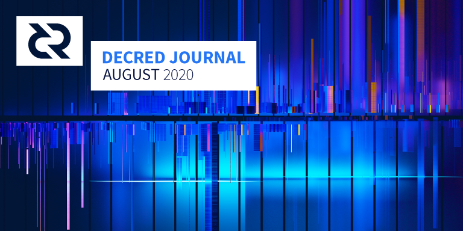

Decred月报 – 2020年8月

图片: Bidirectional @saender
八月重点:
- 发布v1.5.2以修补潜在的拒绝服务攻击。
- dcrdex团队最多有6位活跃成员，每月合并50多个PR(键盘在燃烧)，以清除通过测试发现的bug。
- 去中心化国库支付代码的审查已经结束，收尾工作正在进行中。
- vspd得到了一些提升，现在工作已转移到Decrediton和dcrwallet的集成中。
- Politeia转换为tlog已经准备实施，重构达到适应需求就将开始测试。
v1.5.2补丁发布
此版本修补了潜在的拒绝服务攻击。建议自己运行节点的人以及PoW矿工进行升级。
dcrd和Decrediton的新二进制文件在此处提供。使用前请确保对其进行验证 -现在的说明更加详细和友好。
该漏洞CVE-2018-17145于9月10日在NIST(美国国家标准与技术研究院)披露。Decred团队已于7月7日发布了补丁并于7月8日对其进行了修补。v1.5.2二进制版本于8月27日发布。
截至9月10日，根据dcr.farm，超过20％的节点已升级。
开发进展总结
除非另有说明，否则此处报告的工作仅限为“合并到主核心存储库”状态。这意味着这项工作已经完成、审查并集成到高级用户可以构建和运行的源代码中，但对于普通用户来说，还不能在发布的二进制文件中使用。
说到从源代码构建，v1.5.2中的更改实际上是从master分支上的早期修复程序中向后移植的。这意味着使用源代码构建的人在二进制发布之前1.5个月就收到了这些修复程序。如果您想尝试使用源代码构建，可以查看@kozel 制作的教程以获取帮助。
@davecgh:通过从源代码编译Decred软件，您可以利用代码升级体验最新版本带来的舒适体验，而不必等待正式版本的发布，这是最先进的。
dcrd:
- 向存储库添加了一些历史发行说明。与仅使用GitHub的发行页面相比，这可以更好地保护这些文档不丢失，减少对GitHub的依赖，并允许人们在标准工作流程中做出改
- 添加了simnet环境文档和设置脚本。这可以提高开发人员在测试时的工作效率，还有助于使用通用设置编写可重现的bug报告。
- 引入的contrib目录中包含可选工具，这些可选工具在使用dcrd和相关软件时可能会很有用。当前，这包括操作系统服务配置和新的simnet设置脚本。
- 添加了数据库迁移，以删除所有最近优化后不再需要的区块索引数据。这使dcrd内存占用率减少了约19.5％。
- 已更新为Go 1.15，带来了可观的链接程序提升，使二进制文件减小了5％。
- 改进了文档和测试范围
值得注意的是，notfound触发v1.5.2发行版的消息处理很快又被移植到btcd，并且是其8月发行版的一部分。
进行中：
- 大部分的时间都用在了去中心化国库支付测试工作。
- 已部署的基本VSP v3（vspd）基础结构
- 增加了检索混合帐户，以恢复钱包与CoinJoin交易
- 在
listlockunspent命令中添加了可选的account参数（最初由dcrdex请求，但通常也很有用） - 允许从标准输入创建钱包（对于自动化测试很有用，这有助于多个其他项目）
- 优化数据库布局可实现更快的访问速度和更少的读/写
- 修复了一个bug，其中
listunspent在锁定时报告收益
- 添加了对使用SPV模式运行LN钱包的支持，并默认启用SPV
- 增加了对使用混合帐户还原钱包的支持
- 还原重构的遗留代码以支持旧的和新的staking模型
- 继续升级为使用功能组件，自定义挂钩和CSS模块
- 为侧边栏组件添加了第一个自动化测试
- 大量bug修复
关于使用硬件钱包进行购票有很多问题。@jz 总结了截至9月4日的最新动态：
- @JoeGruff 与Trezor 一起为在Decrediton的simnet上进行选票购买工作，并且即将提交固件的PR。
- 在常规人员可以使用该固件之前，Trezor人员需要审查固件将其合并到上游。
- 据我所知，目前没人在Ledger的支持上工作，Trezor完成后可能会解决该问题。
- 期望在Ledger Live（他们的软件钱包）中支持Staking是不合理的，这不是我们可以为他们做的事情。
承包商管理系统（CMS）稳步发展，将提高问责制和支出效率:
- 用户界面，用于查看相同的域发票
- 为那些已被提案批准但尚未通过DCC批准的承包商添加了新的承包商类型，并且规定了此类承包商无法查看域发票的规则
- 增加了一个限制，即相同域的承包商只能查看彼此过去6个月的发票
- 删除了使用缓存为tlog迁移做准备
从@lukebp处获取的迁移tlog的更新进度：
politeiad tlog后端和politeiad插件的工作已经完成。当前的焦点是重构礼貌。rockroachdb缓存依赖关系已经被删除，而politeiawww以前对其依赖很大，因此重构politeiawww路由涉及到本质上的完全重写。我们从来没有为git后端敲定一个合适的插件架构，导致我们过度依赖缓存。现在我们已经有了正确的tlog插件架构，我们必须把politeiawww逻辑的大部分分离出来，并将其移入插件层。过度依赖缓存也意味着不构建politeiad API，因为对缓存运行相同的查询更快更容易。所有这些现在都必须得到解决。
一旦politieawww重构完成，我们就可以运行性能测试。如果性能测试顺利进行，我们就可以将tlog放到testnet上，并开始为发布做准备。
vspd:
感谢 @isuldor (test.stakey.net)和 @sethsimmons (vspd.realprivacy.cc)）帮助测试了vspd。
最小可行的vspd最终更改已合并，下一步是完成dcrwallet和Decrediton集成。
- 测试工具 改进
- 使配置选项更智能
- 合约的接受者/创建者，锁定时间从24/48小时更改为8/20小时
- 允许缩小深度图上查看更多订单
- 添加了"拆分"交易以适应大小多笔输出。以一笔额外交易为代价，使用户可以更好地控制锁定了多少资金，并释放更多订单的资金，从而创建更健康的订单簿和更好的用户体验。
- 指示市场视图上用户订单的即时生效时间
- 罚款账户通知
- 异步请求/通知处理和并行新匹配协商，以修复长期运行的客户端
init和redeem请求以及其他一些问题 - 如果服务器无法识别，请在客户端禁用帐户
- 在myorders端点中添加了一些预先计算的有用信息，例如订单的期限和结算的金额
- 重复数据删除的websocket代码
- 更新并锁定了npm 依赖项
- 固定余额计算
- 修复了多个并发bug
- 许多其他后端和UI更改
合并了来自6个贡献者的51个PR ，添加了19K并删除了4K行代码。
感谢所有参加 alpha测试的人。
- 在未发送交易对话框中添加了重新广播按钮
- UI调整和翻译更新
docs:
- 图标更新和bug修复
其它:
人员
欢迎新到来的首次贡献者，他们的代码已合并到主代码库中： @hsyia (dcrdocs), @brandoncurtis (decred-release), @isuldor (dcrwebapi), @JustinBeBoy (dcrios).
截至9月1日的社区统计数据：
- Twitter 粉丝: 40,816 (+179)
- Reddit 订阅: 9,906 (+31), 在线: 320
- Matrix #general 用户: 174 (+50) *
- Discord 用户: 1,394 (+22)
- Telegram 用户: 2,468 (-52)
- YouTube 订阅: 4,180 (+30), 浏览: 154K (+3K)
- LinkedIn 追踪: 875 (+13)
- GitHub dcrd 星: 557 (+7), 分叉: 246 (+6)
* 提醒：Matrix 在7月进行了一次大的“清洗” 。
来自社交媒体数据存储库跟踪的其它帐户的一些观察结果：
- Facebook：在30天内decredbrasil 5,799名成员（-36）和57个帖子，在30天内decredinternational 802个成员和20个帖子
- Instagram：decred_es 390位关注者（+15），decredbr 767位关注者（+50），decredproject 578位关注者（+2）。与其他两个帐户不同，英语帐户没有活动的维护者（hint）。
- Twitter：DecredArabia 218位关注者（+5），DecredAustralia 436位关注者，Decred_BR 540位关注者（+13），Decred_CA 334位关注者，Decred_ES 909位关注者（+49），Decred_PL 226位关注者（+3）
- YouTube：Decred Arabia 29个订阅者和0.6K观看次数，Decred Brasil 369订阅者（+108）和13,000观看次数（+ 4K），Decred en Españoll74订阅者（+28）和1.3K观看次数（+ 0.4K）
- planetdecred.org主服务器上的#planetdecred Maitrix聊天室 有151个用户
治理
八月社区开发基金收到12961 DCR，花费10787 DCR。按照8月份的每日平均DCR/USD汇率17.02美元计算，这是22.1万美元的收入和18.4万美元的支出。按7月平均汇率15.13美元计算，当月完成工程的美元账单金额为16.3万美元。截至9月6日，社区开发基金余额为634747 DCR（850万美元，13.37美元）。
新的和已完成的提案：
- 设计领域资金提案 涵盖UI/UX（$ 35K），身份（$ 16K）和可视化通讯（$ 14K）子域中6个月的工作，获得了80％的赞成票和25％的参投率
- 提案 继续向Politeia，Matrix，Discord和Telegram的主持人支付费用（6个月内最多支付9000美元），该决议获得了73％的赞成票和29％的参投率
- 提案 为两个旅行预订网站上的整合和促销活动支付5万美元的提案被拒绝，只有15％的批准和24％的参投率
- @Exitus的视频制作新提案于9月初发布
- 9月初发布了第一个RFP 提案，该提案旨在更改decred.org上的消息传递，并邀请需要对其进行更改的提案
四个提案已被放弃：增强现实海报，AR海报, @fst_nml的营销, 社交媒体段子 和 Decred扑克系列（@darthcrypto将计划一个更完善的提案）。
@pavel分享了Decred OnChain网站开发的屏幕截图和更新：
图表子页面即将完成。从UX/UI的角度来看，我们正在设计主页。我会说我们已完成了±75％。(聊天
预备提案:
@bee正在测试基于GitHub的“提案制图基础架构”，该架构允许多个人编辑草稿，获取反馈和格式帮助，跟踪修订并发表评论。将草稿保存在众所周知的地方可以使它们容易被发现，并且即使原始作者停止开发该提案，也可以保存其它任何进展。
想要更详细地查看治理活动，请查看《Politeia Digest》第34期和第35期。
网络
全网算力: 8月哈希率 以313 Ph/s开启并以 486 Ph/s结束。月内，最低为248 Ph/s，峰值为557 Ph/s。哈希率分布 截至9月1日：UUPool 39%，池30%，lab.antpool.com 9%，BTC.com 2.3%，Luxor 0.8%，F2Pool 0.6%，BeePool 0.09%，CoinMine 0.03%，Suprnova 0.02%，其他~19%。
Staking: 30天平均票价为151.4 DCR (+7.1)。该价格在141.2-168.1 DCR之间变化。锁定金额为582-609万DCR，相当于占可用供应量的49.11-51.03％。
选票价格达到168.12 DCR，这是自2017年更改价格算法以来的新高。
节点: 在整个8月中，每个dcr.farm平均有141个公共侦听节点，总共139个节点（总数约为250个，而在8月10日急剧下降之前，可能会丢失一些数据）。8月的平均版本分布：41％dcrd v1.5.1、11％dcrd v1.5.0、7％dcrd v1.5.2、6％dcrd v1.6开发版本，5％dcrd v1.5开发和RC版本，0.9％dcrd v1.4、10％dcrwallet v1.5.1、1.1％dcrwallet v1.5、1％dcrwallet v1.4，其他16％。
我们的网络更新由@Checkmate分享的观察结果显示，平均每天10万个DCR混合，构成链上交易量的一个重要组成部分，散列率在“thermocap”之上的市场复苏后有所提升，以及三个Decred的特定指标的变化。
新 研究成果全面概述了衰退的挖矿市场机制。对于那些喜欢视频/音频格式的人，可以在 YouTube上获得论文和图表的概要概述。强烈建议阅读全文。
了解Decred区块链最大的自然卖方的激励机制，机制和性能指标，既可以了解市场定价，也可以了解网络安全性。这项研究为解释Decred挖矿市场的背景和表现提供良好的基础。
整合
Transak 发推文称，DCR现在可以通过其服务在32个国家/地区购买。
BitcoinToYou现在允许买卖巴西法定货币BRL的DCR。@ michae2xl在提出Decred 视频直播的频道上。
警告：Decred Journal的作者不了解上述任何服务的可信赖性。在将您的个人信息或资产托管给任何实体之前，请先自行研究。
外展活动
去中心化国库支付工作在Twitter上引起了应有的关注。感谢所有开发人员发布开发更新。
Decred Latam团队针对其营销提案发布了第二和第三项活动报告。这三份报告均已完善并保存在提案库中。
@ michae2xl 报告了他8月份针对巴西市场营销提案的活动(已存档)。
Monde PR 八月份的成就：
- 更新了PR日历，其中包含未来6个月的建议和故事创意
- 创作并向媒体宣传2个故事创意
- 通过加密和主流出版物获得了两次电子邮件问答
- 向Decred发言人提交了对一个新闻报道的评论
Monde PR保证的新闻报道：
- AMB Crypto上的一篇文章，由@ jy-p发表有关比特币扩展的评论，并联合了4个新闻媒体，包括Fintech Zoom和 Sunrise Reads
- Finance Magnates中的一篇文章，其特色是@ jy-p关于个人数据保护的评论
- Cointelegraph中的一篇文章，重点介绍@ jy-p对Ledger的安全挫折的评论，并联合了7家媒体，包括The Union Journal 和 Armenian Reporter
活动
参加：
- 8月5日 - Governance and blockchain - 互联网。@elian加入Dash的Cristobal Pereira和Ernesto Contreras，与Dash，Decred Treasury，Politeia的机制和提案流程进行了比较，讨论了Decred的区块链治理。该事件在西班牙Cointelegraph上宣布。 (视频)
- 8月8日 - Hablemos Decred 8 - 互联网。@elian的评价和若泽·曼努埃尔·达·席尔瓦从criptolugares.io谈到cryptocurrencies和商业，特别是在委内瑞拉，并通过从交换的角度媒介的前景。(视频)
- 8月11日 - Decred Talk 1 - 互联网。在巴西版Decred Talk的第一集中，@ michae2xl和AndréHorta（BitcoinToYou首席执行官）谈论了Decred DAO和自治生态系统。该事件在BitcoinToYou的频道上进行了流式传输。(视频)
- 8月17日 - Decred Talk 2 - 互联网。第二版Decred Talk托管在Instagram上。目的是与新的/未知的社区成员互动并回答他们的问题。(视频)
- 8月20日 - Hablemos Decred 9 - 互联网。@adcade和来宾毛里西奥·奥坎波technolawgeek.com讨论cryptocurrencies的法律观点。(视频)
- 8月28日 - Legal status of Bitcoin - 互联网。由Paxful Latam组织。
- 8月28日 - Hablemos Decred 10 - 互联网。@ adcade，@ elian和来宾Carlos Ramirez讨论了网络安全，隐私和网络犯罪。(视频)
- 8月29日 - From laws to protocols - 互联网。由墨西哥自由女学生主办。(视频)
- 8月31日 - Future of organizational structures：集中与分散-互联网。@elian与John DeVadoss（Neo）和Ernesto Contreras（Dash）组成一个小组，讨论分散组织的治理。(视频) 由Fintech咨询服务组织。 (视频)
在其他新闻中，@eSizeDave正在组织一个网络研讨会，以帮助澳大利亚皇家墨尔本理工大学的学者学习Decred，作为他们研究的一部分。
媒体
精选文章：
- Decred,挖矿市场机制 @Checkmate (medium)
- 加密效用资产 @mm (stakey.club)
- 区块链治理 - 第1部分 @mm (stakey.club)
- 我们的网络 #34 Decred特殊更新 @Checkmate (substack.com)
翻译:
- Decred, 挖矿市场机制 - 西班牙语 by territorioblockchain.com
- Politeia Digest第33-35期- 阿拉伯语（@arij，@ abdulrahman4）和西班牙语（@pablito）
- Decred月报-2020年7月被翻译成阿拉伯语（@arij，@ abdulrahman4），中文（@Dominic），葡萄牙语（@mm）和西班牙语（@francov_）。@kozel的波兰五月和六月六月现在也可用。谢谢你们！
其它非英语内容：
- 我们完全错过的创建Decred阿拉伯在YouTube频道回五月（开玩笑的，提交你的故事！）。该频道目前拥有7个视频：2原来的货币历史和Decred的历史，并用阿拉伯语字幕，如5个战略性英语视频如何Decred是独一无二的，并如何桩号Decred。原始英文视频中也提供相同的字幕。源文件位于GitHub上以进行协作和重用。如果您想将翻译的字幕提交给Decred的视频，请联系@Exitus。
- @elian在2月和6 月的西班牙Territorio比特币播客中得到了关注，其观看次数分别为7K和5K。
- @elian 在西班牙Cointelegraph中被引述为营销和有机增长的挑战。
视频:
- Decred 双周报 - 8月18日 2020 by @Exitus (youtube)
- Decred的5大看涨信号 LiteLiger (youtube)
- 挖矿市场机制 @Checkmate (youtube)
- 你知道Decred的治理吗 Decred Society (youtube) - 对Politeia提案流程的快速概述
音频:
- Staked Podcast Episode 0.0. “我花了一年多的时间才建立起勇敢的榜样”。祝贺Eduardo启动播客！(anchor.fm, 推文)
- Rough Consensus 10. 在这集中, spidermen 和 @notsofast共同讲述 - -具有广泛专业知识的加密货币OG：比特币与山寨币，为什么使用Decred，挖矿，投资/交易方法等等。 (libsyn)
即使段子提议被放弃了，人们还是开始独立地产生段子：
- 为dao做贡献
- 攻击 Decred
- strong doge
- 攻击成本
社区讨论
精选的Reddit帖子：
- 新人想知道为什么更广泛的加密社区不重视DCRDEX
- 问题有关国库管理的基金曾在深入回答几个
- 7月31日，周五“前瞻思维”聚焦于反向消息传递，其中@Checkmate建议了Decred营销的两个潜在领域，即“ Decred准备就绪”和“面对'De'Fi的名称，去中心化信用'
- 8月7 日，周五“前瞻思维”主要涉及营销理念，在这里，我们首先讨论了奖励对产生对Decred有用的作品的比特币开发人员的想法。
- 8月14日，前瞻性思考周五的最高评论是关于在Decred上构建私有DAE
- 月28日，前瞻性思考星期五的头条评论是关于使用DCRDEX创建加密索引
选定的Twitter讨论：
- 勉强的浣熊无法在Decred之外的任何地方找到“ DeFi治理令牌”的满意度
- @DecredSociety 指出，FCAS评级中Decred的“市场成熟度”部分有所下降，但总体而言该项目仍为A级
- @degeri 提醒 Decred总是在招聘（并为最近被“重组”的某些公司加标签）
- @CATO_io 探索了Decred的道德操守和风险分担如何导致更强大的系统。创意外展的好例子，暴露了项目的新方面。
市场
8月DCR交易价格在15.25-23.49美元/ BTC 0.00134-0.00202之间。每日平均汇率为$ 17.02。
在8月2日btc创下12100美元的新高后，BTC/USD在几分钟内跌至10550美元，并触发了价值超过10亿美元的期货清算。ZeroHedge 写道，价格操纵很可能是因为“在一次交易中拿走整个出价栈”并不符合卖方的最佳利益。
在Twitter上，@ Checkmate分享了他的模型，其中DCR的熊市受到ASIC矿工在牛市高峰期投资于硬件的强制性抛售的巨大影响。
相关外部
比特币现金正在为另一个社区进行分叉的热身。BitcoinABC客户的开发人员宣布，11月15日的下一个半年一次的硬分叉将增加一项要求，即每个区块奖励的一部分必须分配给开发人员控制的地址。罗杰·维尔（Roger Ver）和其他人在推特上说这是不可接受的，他们不会加入。
以太坊经典遭受了另外 两次双重花重组攻击，攻击者从第一次攻击中获得了560万美元，该攻击是用价值204,000美元的租用算力执行的。攻击重组了如此众多的区块，以致一些实现忽略了它们，网络分区了。
IOHK和Cardano的Charles Hoskinson已为ETC 提出了两个ECIP，一个是添加检查点以阻止长时间的重组，另一个是添加了一个获得20％整体奖励的发展基金。在社区中，集体奖励提案似乎引起了很大争议，ETC实验室拒绝了这个想法。
YAM令牌和协议在8月诞生和死亡，其周期持续了大约3天，即使对于DeFi来说，这也是最快的。该令牌被称为YAM协议的“管理令牌”，但是一旦系统启动，就很明显它已从根本上被破坏。在一个很短的窗口中，动员了YAM农民采取行动并保存了协议，但是解决方案中也存在一个错误，因此它现在已经死了。YAM被免责声明是关于试验，未经审核的，并且是在10天的时间内通过将其他智能合约粉碎在一起而产生的-在发布后的一小时内，投资了7600万美元，在宣布致命缺陷之前的第二天增加到3亿美元。
MakerDAO激活它应该提高对工务局技术通告上限，但执行“拼”的合同，而不是将其设置为零。除了延迟提供更多的WBTC之外，这次似乎没有其他危害。
Zcash基金会正在选择一个由5个成员组成的董事会来控制即将获得的大笔奖励资金的份额。该委员会将由社区顾问小组投票选出，该小组目前有62名成员，但是每个成员现在都可以邀请另外一名成员。
Coinbase首席执行官证实，该公司正在开发一个平台以加入初始交换产品（IEO）业务，临时名为Coinbase Launch。
根据Statista全球消费者调查，加密货币的采用在尼日利亚和越南最为普遍。
金融科技公司Plaid（由 Coinbase，Gemini和其他公司使用）受到了500万美元以上的集体诉讼。
1. 想象一下，有一家公司在交易后几小时内就知道您存入或提取的每一美元，您从信用卡收取或支付的每一美元以及为退休而存放的每一美元。想象一下，这包括您购买的每本书籍或电影票或餐食，您向医生或医院支付的每笔账单，以及您按揭，学生贷款或信用卡账单所付（或未付）的每笔款项。想象一下，该公司为您维护了一个文件，其中包含了五年前的所有信息。想象一下，该公司使用您的用户名和密码登录到您在银行维护的在线帐户，并每天多次更新该文件，以随时了解您进行的每笔财务举动。
2. 想象这家公司不是您的银行。想象一下，就您所知，您从未向该公司提供用户名和密码，也未授权该公司访问您的在线帐户。想象一下，您根本没有听说过这家公司。
想象有人拥有了他们的数据库，并用它来识别加密货币持有者。
顶级加密货币交易所正在起草一份有关共享客户数据的白皮书，以符合FATF的“旅行路线”要求。
在澳大利亚提起了针对Google和Facebook的集体诉讼。科技巨头因在2018年禁止加密广告而被指控具有反竞争行为，据称这杀死了ICO市场，损害了更广泛的加密行业，同时没有有效地阻止假冒骗局。
由美国国会两党组成的团体已写信给IRS，要求澄清如何将PoS奖励用于税收目的-并要求将其不视为收入，而是作为验证人生产的商品，在验证时应征税被卖了。
美国邮政局为基于区块链的安全投票系统申请了专利。
关于月报
这是Decred Journal的第29。有关所有问题，镜像和翻译的索引，请参见 此处.
在经过最少的健全性检查之后，来自第三方的大多数信息都会直接从来源中继。Decred Journal的作者无权验证所有声明。请当心诈骗，并自行进行调查。
感谢 (字母排列):
- 写作和编辑: bee, degeri, l1ndseymm, lukebp, richardred
- 评论和反馈: davecgh, jholdstock, jrick, jz, Exitus, michae2xl
- 封面图片: saender
中文社区
欢迎同时关注英文月报了解更多最新消息